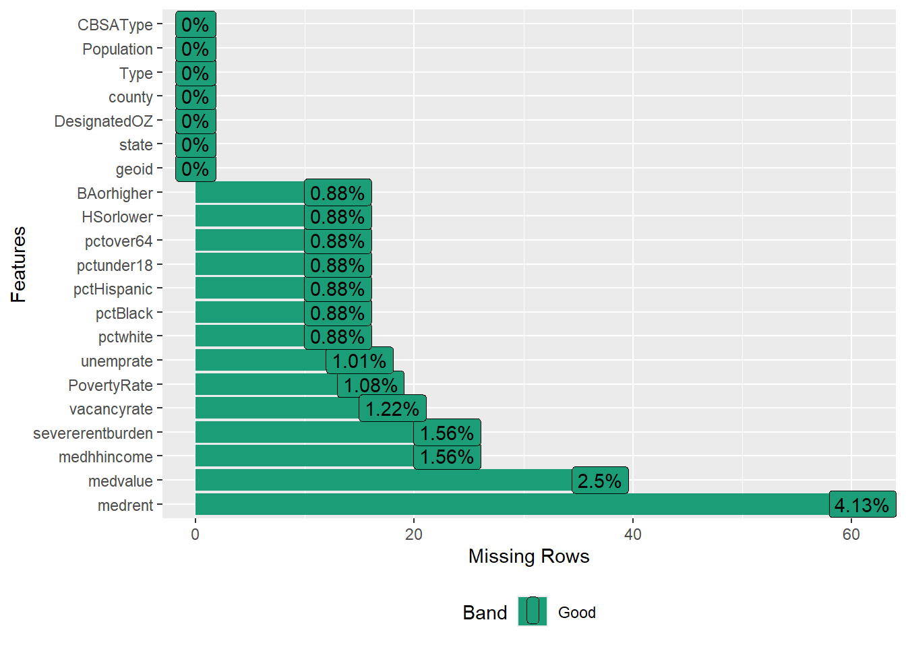
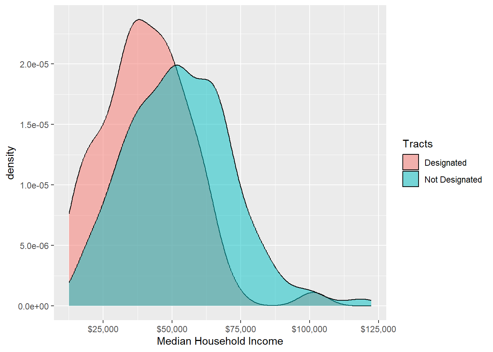
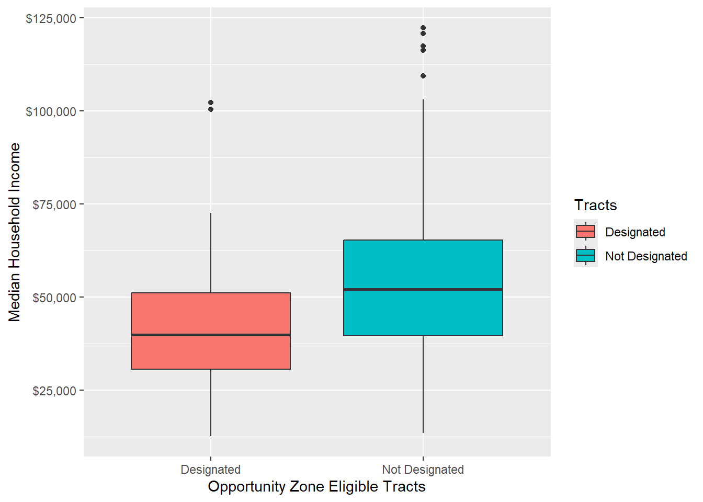
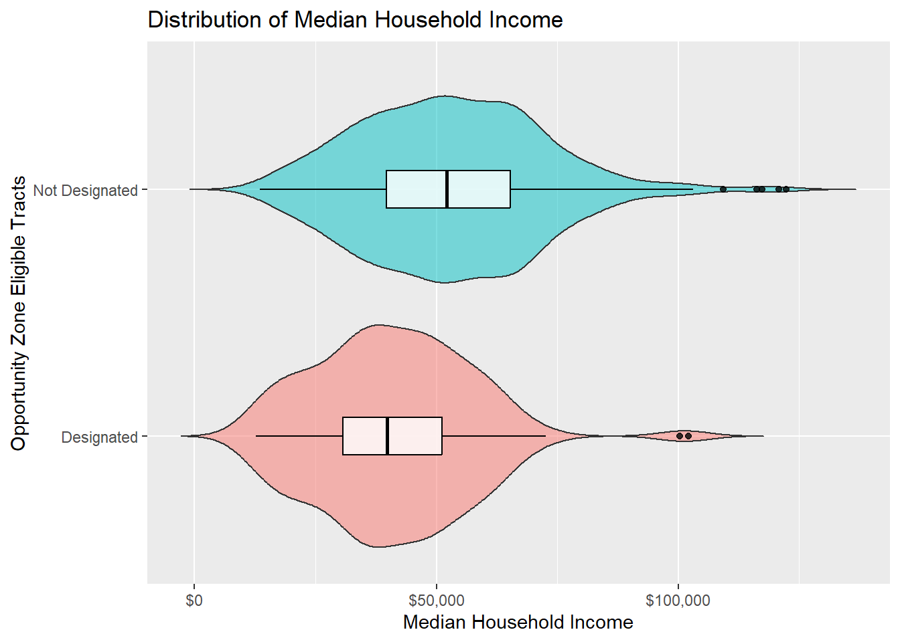
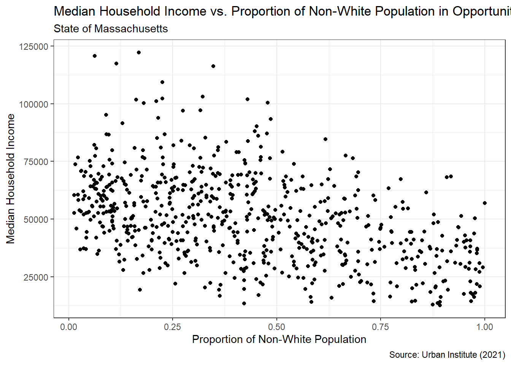
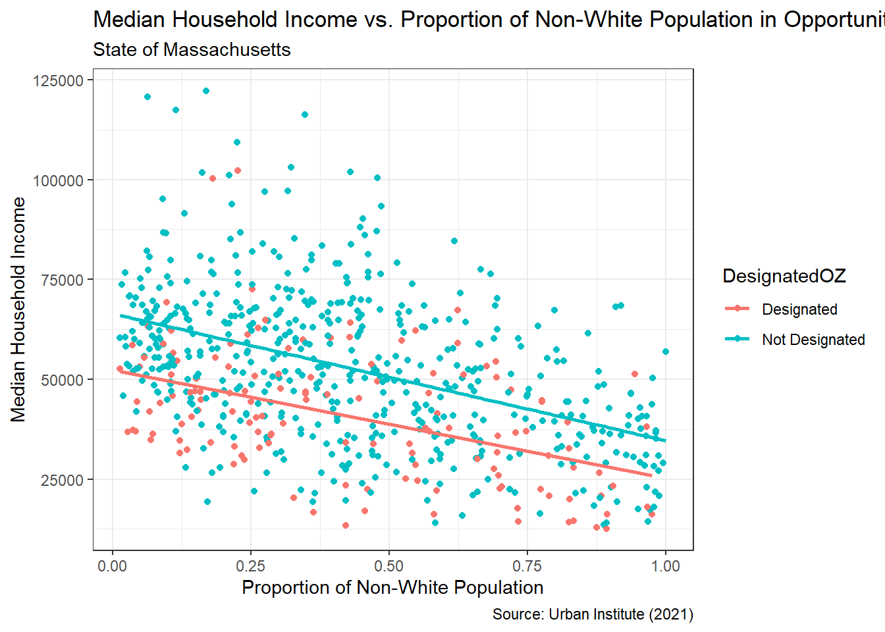
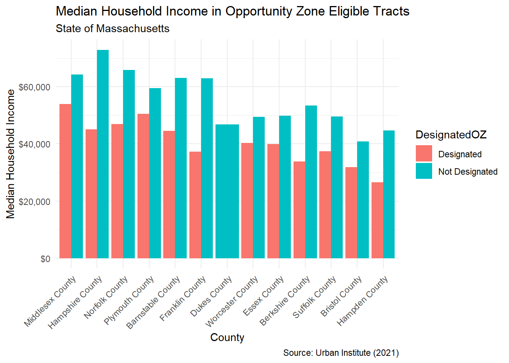

library(tidyverse)
library(DataExplorer)Exploratory Data Analysis: Opportunity Zones 
11.118/11.218 Applied Data Science for Cities
Background
The 2017 Tax Cuts and Jobs Act created a federal incentive to encourage investment in low-income and undercapitalized communities. States were allowed to select specific census tracts as Opportunity Zones (OZs), where investors could receive tax benefits on eligible investments.
The motivation was: the US recovery after 2008 was extremely lopsided. A handful of metros captured most of the new jobs and business formation, while thousands of neighborhoods struggled to come back. The policy aims to steer private capital toward the places it had abandoned.
The unit of designation is the census tract, a neighborhood-sized area of roughly 1,200-8,000 people. Selection of opportunity zones happened in two steps:
Eligibility. A tract had to qualify as a “Low-Income Community”: a poverty rate of at least 20%, or a median household income no greater than 70% of the state median1. Some tracts also qualified simply by being adjacent to an eligible one.
Designation. Each state’s governor nominated tracts, capped at 25% of the state’s eligible tracts, and the Treasury Secretary certified them.
In 2018 this produced 8,764 opportunity zones nationwide.
The 2025 tax law made Opportunity Zones permanent and reset the map. The original designations expire on December 31, 2028, and states are nominating a new round as we speak. New zones are expected to take effect January 1, 2027. Re-designation will happen every 10 years after that.
Check out 2018 OZ maps | Read about the new rules for OZ2.0 eligibility
What We Will Do Today
The main factors used to determine OZ eligibility are median household income and poverty rate, both drawn from Census data. In this exercise, we will take a look at these economic variables across census tracts. The selection logic indicates a hierarchy: designated tracts, tracts that were eligible but not designated, and tracts that never entered the eligibility pool. It will be an empirical question to see how they look economically different from one another.
This approach can be generalized to, for example, comparing parcels inside versus outside a floodplain, districts in and out of an historic redlining zone, schools above and below a funding cutoff, etc.
Project Management, Data and Packages
I recommend creating a separate folder for each assignment. For today, open RStudio and navigate to File > New Project… When the dialog box appears, choose New Directory, then New Project. Proceed to create a “Lab 1” folder as your working directory.
While we wait to see what OZ 2.0 looks like, the 2018 data gives us plenty to work with. Urban Institute has been doing a series of research on opportunity zones and have originally compiled nationwide tract-level OZ data. For today’s analysis, we will use data for all tracts in Massachusetts.
Download the data and save it to a “data” folder in your Lab 1 project folder.
You do not need to start a Quarto Document right now. Instead, you can open a plain R script to type, test, and run the code as your read through the tutorial. When you get to the exercises at the end of the tutorial, you will be asked to start a Quarto document.
To stay organized, let’s load packages at the beginning of our script. These are the two packages we are going to use today. You may want to run install.packages() on DataExplorer if it’s the first time you use it.
Read Data
We can use read_csv provided by readr packages to read this file.
data <- read_csv("data/oz_analysis.csv")
This data lists all 1,478 census tracts in Massachusetts. You can view the dataset dimensions in the Environment panel, or use View(data), glimpse(data), or nrow(data) to observe its structure.
The column Type indicates OZ eligibility: Those marked as “Low-Income Community” and “Non-LIC Contiguous” are eligible tracts.
And the column DesignatedOZ indicates designation results: Those marked by 1 are tracts ended up designed as OZ in the 2018 round.
The table also contains many Census economic and demographic data that describe these tracts:
- Population: total population of the tract
- medhhincome: median household income in a tract
- PovertyRate: poverty rate
- unemprate: unemployment rate
- medvalue: median house value
- medrent: median gross rent per month
- severerentburden: % of households spending more than 50% of their income on rent
- vacancyrate: residential vacancy rate
- pctwhite: White non-Hispanic population (%)
- pctBlack: Black non-Hispanic population (%)
- pctHispanic: Hispanic and Latino population (%)
- pctunder18: population under 18 years old (%)
- pctover64: population over 64 years old (%)
- HSorlower: population whose highest education is a high school diploma or less (%)
- BAorhigher: population with a bachelor’s degree or any higher level of education (%)
Explore the Table
Clean Up Values
The Urban Institute has coded the DesignatedOZ variable as either taking a value of 1 when designated, or NA when not. Since the NA and 1 here have no mathematical meaning, it would be easier to read if the column simply showed text like “Designated” or “Not Designated.” In the following code, we are updating the column DesignatedOZ.
The mutate function in dplyr allows you to modify your dataset by either adding new columns, or updating values in existing columns.
data <- data |>
mutate(DesignatedOZ =
ifelse(is.na(DesignatedOZ),
"Not Designated", "Designated"))Within mutate(), the DesignatedOZ = is taking new values. The ifelse(condition, "Not Designated", "Designated") is used to set the value of DesignatedOZ based on the condition: If NA, it assigns the text “Not Designated”. Otherwise, it assigns “Designated”.
You can browse the dataset again. After the modification, we can make a quick count of both types of tracts.
data |>
count(DesignatedOZ) # A tibble: 2 × 2
DesignatedOZ n
<chr> <int>
1 Designated 138
2 Not Designated 1340A quick reminder of when to use <- (assign to).
- Use
<-: when you want to save your result to a variable. In the example above, we saved the mutated result back to thedatavariable - Do not to use
<-: when you want to just view results without modifying the data.
Check Completeness
When scrolling around data in the data viewer, you will notice there are multiple rows of NAs in the demographic attributes. How many missing values are there, and how many would be a hurdle for my analysis? It will be great to have a sense of completeness in terms of what proportion of a field actually holds data.
Below we use is.na to check if each element in data is NA, and use colSums to sum up all TRUE values by column.
colSums(is.na(data)) geoid state DesignatedOZ county
0 0 0 0
Type Population medhhincome PovertyRate
0 0 23 16
unemprate medvalue medrent severerentburden
15 37 61 23
vacancyrate pctwhite pctBlack pctHispanic
18 13 13 13
pctunder18 pctover64 HSorlower BAorhigher
13 13 13 13
CBSAType
0 Another way to observe missing values in each column is to use plot_missing in the DataExplorer package.
plot_missing(data)
plot_missing calculates the proportion of missing values in a given variable, and makes some judgemental calls of whether the missing is significant, indicated by “Good”, “OK”, and “Bad”. (Feel feel to check out ?plot_missing in your console. What are the default ranges for these three categories?)
Overall, most of our columns have a very small portion of missing values (around 1%). When we examine where these missing values occur, we will find that a lot of them are associated with tracts with zero population, most likely representing green spaces or bodies of water, while others reflect unavailable Census data. Removing these observations is unlikely to cause significant representativeness issues.
However, when performing calculations, we need to include the na.rm = TRUE argument, indicating that we are calculating based on the available 99%.
Quick Data Checks
We can calculate the statewide median of median household income. Function summarise() collapses the medhhincome column into a single summary value.
data |>
summarise(state_value = median(medhhincome, na.rm = TRUE))# A tibble: 1 × 1
state_value
<dbl>
1 71172But we can also summarize by groups, collapsing values according to the values in the Type column. Here we use group_by(Type) before summarise().
data |>
group_by(Type) |>
summarise(
group_value = median(medhhincome, na.rm=TRUE))# A tibble: 3 × 2
Type group_value
<chr> <dbl>
1 Low-Income Community 45913
2 Non-LIC Contiguous 68938
3 Not Eligible 91049Low income community tracts have a median household income of about 64% of the state median ($45,913/$71,172), below the 70% eligibility threshold.
Make Summary Tables
Eligibility was defined by poverty and income, so comparing eligible vs. non-eligible tracts is less interesting. What would be more interesting is comparing eligible-but-not-designated and designated tracts. Both cleared the same statutory bar; governors picked some and not others. So how economically different were the two groups?
Now we use filter() to shrink the data to the 677 eligible tracts. Here we created a new variable ozs.
ozs <- data |>
filter(Type != "Not Eligible")The summarise function is very helpful for generating multiple statistics of interest for the two groups, all in one step:
ozs |>
filter(!is.na(medhhincome)) |>
group_by(DesignatedOZ) |>
summarise(mean = mean(medhhincome),
sd = sd(medhhincome),
min = min(medhhincome),
max = max(medhhincome))# A tibble: 2 × 5
DesignatedOZ mean sd min max
<chr> <dbl> <dbl> <dbl> <dbl>
1 Designated 40870. 16140. 12628 102171
2 Not Designated 52920. 18901. 13469 122264Distribution of one variable
Density plot
The code below creates a density plot to contrast the distribution of median household value between designated and undesignated OZs. We are using grammars of the ggplot function introduced in class, then adding more features with the + operator and other functions listed in the package reference.
A density plot (using geom_density) can be understood as a smoothed representation of the histogram. It takes account of the influence of every data point and smooths them out into a continuous curve.
ozs |> ggplot(): This is the main plotting function.ozsis your dataset we use.geom_density(): Recall that geometric layers are called geoms_*. It tells R what kind of geometry you want to use visualize the data.aes(x = medhhincome): Theaes()function is where you tellggplotwhich variable goes on the x or y axis. A one-variable plot does not require a y.- The next aesthetic element is
fill, which indicates the filled color of the areas. Why we are not usingcolor?fillcontrols the color of the inside of a shape,colorcontrols the outline. - We used a new function
scale_x_continuousto specify x axis properties. Here we are setting the income values are labeled as dollar, so that they are better formatted. (Without this line, they will by default show as decimal numbers).
ozs |>
ggplot(aes(x = medhhincome, fill = DesignatedOZ)) +
geom_density(alpha = 0.5) +
scale_x_continuous(labels = scales::dollar) +
labs(x = "Median Household Income", fill = "Tracts")
Both distributions are right-skewed, and they overlap a lot. But designated tracts show a sharper, more concentrated peak at lower income levels (~$35–40k) compared to Not Designated tracts. Designated opportunity zones also tend to have lower median household income.
Boxplot
The code below creates a boxplot to contrast the distribution of median household income between designated tracts and undesignated tracts.
- Here we have
aes(x = DesignatedOZ, y = medhhincome), to tellggplotthat we will put the two types of tracts on the x axis side by side, and the y axis will show the income.
ozs |>
ggplot(aes(x = DesignatedOZ, y = medhhincome, fill = DesignatedOZ)) +
geom_boxplot() +
scale_y_continuous(labels = scales::dollar) +
labs(x = "Opportunity Zone Eligible Tracts",
y = "Median Household Income",
fill = "Tracts")
This boxplot confirms Designated tracts have a lower median income (~$40k). The Not Designated group shows more high-income outliers, which ties back to the eligibility logic: tracts adjacent to low-income tracts could qualify for designation even if their own income was relatively high.
Combine basic graphs to create composite views
ggplot provides the option to plot multiple geom_ on top of each other. For instance, we can combine the two plots above, to show both the curves and the essential statistics in the boxplot. The following code uses two geom_(Check out geom_violin for more), and introduces several new arguments for fine-tuning the cosmetics.
trim = FALSE: If TRUE (default), trim the tails of the violins to the range of the data. If FALSE, don’t trim the tails and show the complete distribution.alpha = 0.5: the transparency of the plotting area.coord_flip(): whether the y axis is displayed horizonally or vertically.legend.position = "none": where to put the legend (“left”, “right”, “bottom”, “top”), or not showing the legend (“none”).
ozs |> ggplot() +
geom_violin(aes(x = DesignatedOZ, y = medhhincome, fill = DesignatedOZ), trim = FALSE, alpha = 0.5) +
geom_boxplot(aes(x = DesignatedOZ, y = medhhincome), color = "black", width = .15, alpha = 0.8) +
scale_y_continuous(labels = scales::dollar) +
labs(x = "Opportunity Zone Eligible Tracts",
y = "Median Household Income",
title = "Distribution of Median Household Income") +
coord_flip() +
theme(legend.position = "none")
A useful way to learn ggplot is to take some arguments out, run it again, and see how it changes the plot! What you see is what you get: every tweak you make shows up right away in your graph.
Relationship between two variables
Scatter plot
A scatterplot allows us to plot two variables against each other, making it easier to see whether there is a pattern between them. Here, we can plot median household income against some demographic variables, e.g. the share of the population that is non-White.
Note that we used theme_bw, which is a theme template for a cleaner look.
ozs |>
mutate(pctnonwhite = 1 - pctwhite) |>
ggplot(aes(x = pctnonwhite, y = medhhincome)) +
geom_point() +
labs(x = "Proportion of Non-White Population",
y = "Median Household Income",
title = "Median Household Income vs. Proportion of Non-White Population in Opportunity Zone Eligible Tracts",
subtitle = "State of Massachusetts",
caption = "Source: Urban Institute (2021)") +
theme_bw()
There seems to be a slight decrease of slope as we move from left to right along the x-axis. But we can make it more explicit by adding a linear trend (geom_smooth), and distinguish between the two groups (add the color argument in aes()).
ozs |>
mutate(pctnonwhite = 1 - pctwhite) |>
ggplot(aes(x = pctnonwhite, y = medhhincome,
color = DesignatedOZ)) +
geom_point() +
geom_smooth(method = "lm", se = FALSE) +
# 'lm' represents linear model
labs(x = "Proportion of Non-White Population",
y = "Median Household Income",
title = "Median Household Income vs. Proportion of Non-White Population in Opportunity Zone Eligible Tracts",
subtitle = "State of Massachusetts",
caption = "Source: Urban Institute (2021)") +
theme_bw()
As the percent of non-white population increases, median household income tends to decrease across tracts, regardless of whether they are designated as OZs. This isn’t because race is part of the OZ selection criteria. Rather, it reflects that income and racial composition are already strongly correlated, a legacy of redlining, exclusionary zoning, and other historical policies that pushed minority populations into lower-income areas. So when tracts are selected based on income and poverty, they tend to end up concentrating heavily toward people of color
Exercise
Now let’s start a new Quarto document (refer to Lab 0 on how to do it). Remove its template texts. You are going to work on your lab report here.
Treat this blank Quarto document as a fresh start. Your current R environment variables (such as ozs) won’t carry over. So start by adding code blocks to load your packages, read in your data, and redo necessary cleaning steps from the tutorial. Use the tutorial code as a guide, but grab the parts you need to get your script working!
In the YAML header of your Quarto document, remember to add embed-resources: true to ensure your HTML output is self-contained - so that you won’t lose any images when you submit it to us!

Exercise 1
Let’s start with your ozs variable. When creating summary tables, we can put, not one, but two, columns in the group_by function, for instance, grouping first by county and then by eligibility, allowing for comparisons within each county.
ozs |>
group_by(county, DesignatedOZ) |>
summarise(
Income = median(medhhincome, na.rm=TRUE))# A tibble: 25 × 3
# Groups: county [13]
county DesignatedOZ Income
<chr> <chr> <dbl>
1 Barnstable County Designated 44620
2 Barnstable County Not Designated 63026.
3 Berkshire County Designated 33897
4 Berkshire County Not Designated 53365
5 Bristol County Designated 31906.
6 Bristol County Not Designated 40788
7 Dukes County Not Designated 46816
8 Essex County Designated 39875
9 Essex County Not Designated 49842.
10 Franklin County Designated 37308
# ℹ 15 more rowsBuilding on this result, we will make a bar chart.
Let’s first take a few minutes to observe the bar chart below:

Try replicating the bar chart in the image. The geom function you should use here is geom_col().
Once you have got the basic bar plot, think about how to polish it up. You can consider adjusting your code by responding to the following questions.
The bars in the image are not stacking on top of one another. If you don’t want a stacked bar chart, you can adjust the
positionargument ingeom_col().The x-axis labels are titled to 45 degrees. How can I achieve this? (Hint: adjust theme,
axis.text.x)The counties are not arranged alphabetically, but rather by values mapped to the y-axis, starting from large to small. How to achieve this? (Hint: reorder x based on y).
Please add the title, subtitle, x- and y-axis labels, and the data source annotation to your bar chart.
Feel free to consult the R Graph Gallery and Aesthetic specifications for additional resources. If there is anything else you want to experiment, like changing the color scheme or the theme template, go for it.
Exercise 2
It would be even more helpful to reshape our result, arranging the previous table in a way that each county has a single row with separate columns for designated and not-designated income value.
Functions pivot_wider() and pivot_longer() are useful for reshaping data. pivot_wider() adds columns to a dataset by transitioning content from rows to columns. pivot_longer() does the opposite: making a dataset longer by transitioning columns to rows.
ozs |>
group_by(county, DesignatedOZ) |>
summarise(Income = median(medhhincome, na.rm=TRUE)) |>
pivot_wider(names_from = DesignatedOZ, values_from = Income)# A tibble: 13 × 3
# Groups: county [13]
county Designated `Not Designated`
<chr> <dbl> <dbl>
1 Barnstable County 44620 63026.
2 Berkshire County 33897 53365
3 Bristol County 31906. 40788
4 Dukes County NA 46816
5 Essex County 39875 49842.
6 Franklin County 37308 62986.
7 Hampden County 26507 44751
8 Hampshire County 45108. 72886
9 Middlesex County 53894 64286.
10 Norfolk County 46947 65845
11 Plymouth County 50549 59545
12 Suffolk County 37364. 49559
13 Worcester County 40312 49464 From here, your tasks are:
Use function
mutate()to add one new column, so that it shows the difference in income between designated and not designated tracts. Save this table as a new variable. (If you see NAs, talk about where it comes from, and how you would handle it).Arrange the counties in descending order of the difference. Which county has the greatest disparity in median household income between designated and non-designated tracts?
Exercise 3
We have been exploring medhhincome in the tutorial, now let’s investigate the PovertyRate variable, the other economic variable involved in OZ eligibility.
Using
PovertyRate, create one graphical representation that compares its distribution between designated Opportunity Zone tracts and undesignated tracts in Massachusetts. Your visualization should make it easy to see whether the two groups differ in their poverty-rate distributions.Choose one demographic variable from the table, then create a graphical representation showing how it relates to
PovertyRate. Describe whether the two variables appear to be related or unrelated, and identify the direction of the observed relationship.Connect your analysis to the broader discussion of Opportunity Zones.
There is a broader discussion about how OZs have been and should be designated. A clean “more distressed tracts got picked” story might not hold up everywhere (Urban Institute, 2018). Designation can happen due to geography, adjacency to other investment, political considerations, or growth potential (e.g., tracts near universities or transit).Critics also argue that the designation directs subsidies toward areas that are already attracting investment, rather than toward the most distressed communities. (CRS/OBBBA reform reporting, 2026). Others point out that investment in some zones actually translates into displacement rather than improvement for existing residents, a pattern especially strong in places like Washington, D.C. (Brookings, 2026).
In this lab, we have only touched on a small piece of OZ discussions. Based on your results so far, suggest 1-2 questions you might be interested to explore further. For each, conceptually describe what additional data or information would be helpful for you to investigate it.
Lab Report
Please complete your Quarto document, include the code you used, the tables you produced, and any explanatory text that you think would help clarify your results. After you render your Quarto document, you will find an “.html” file in your project folder. Please submit the Rendered HTML file that shows your work and responses for each of the three Exercises included in this lab.
Please upload your report to Canvas by 9am, Wednesday, Sep 23.
Footnotes
Department of the treasury office of tax analysis. March 2026. Eligibility criteria for determining census tracts eligible to be nominated as 2027 qualified opportunity zones.↩︎